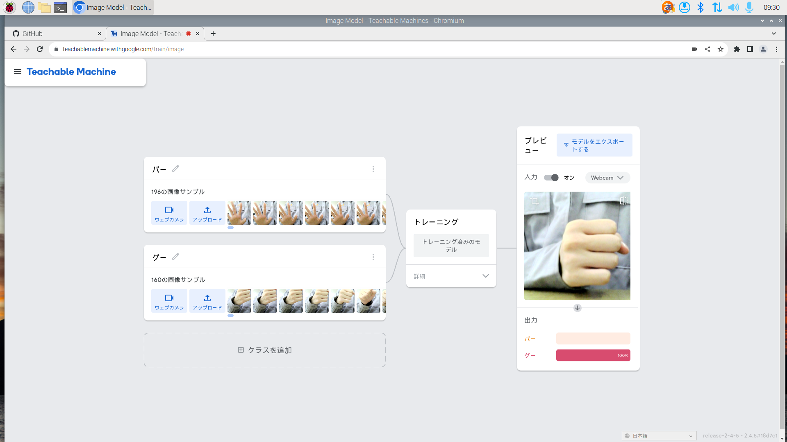

2-2 機械学習体験

1.内容
Teachable machineを使ってウェブカメラで撮ったグーとパーの画像を読み取り、トレーニングさせ、カメラに写している手を認識させる機械学習をおこなった。
2.感想
ウェブカメラで画像を撮るだけでAIが画像を認識し、判断できるのはすごい技術だと思った。サンプルをトレーニングする時間も短く、誰でもかんたんに機械学習ができるのには驚いた。
Teachable machineはscratchにも取り入れれると聞いて、一人でもたくさんの技術を使えるのは楽しそうだし自分も挑戦してみたいと思った。